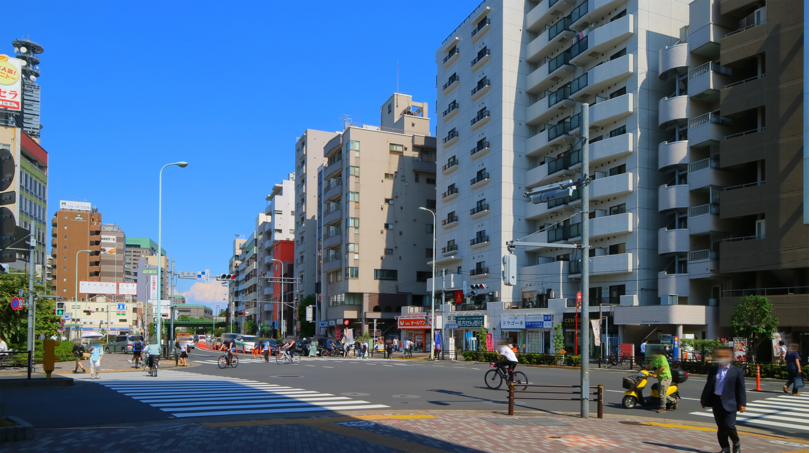
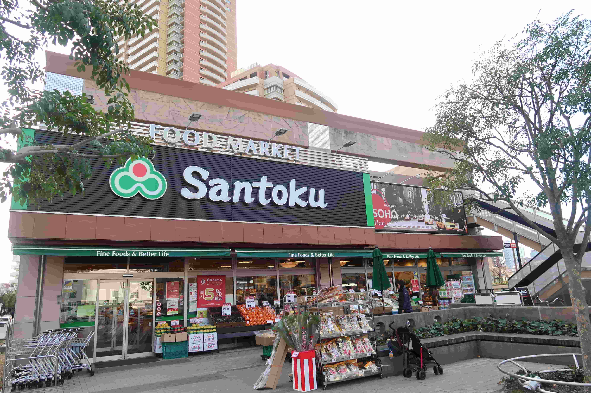
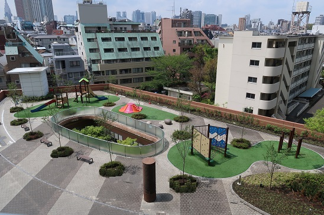
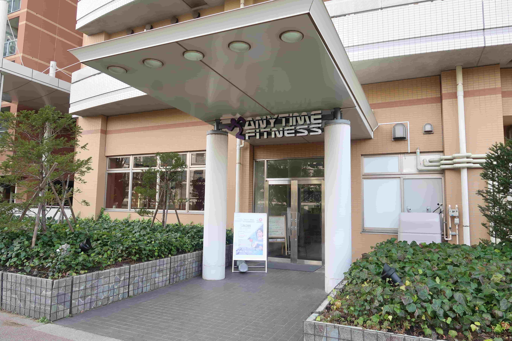
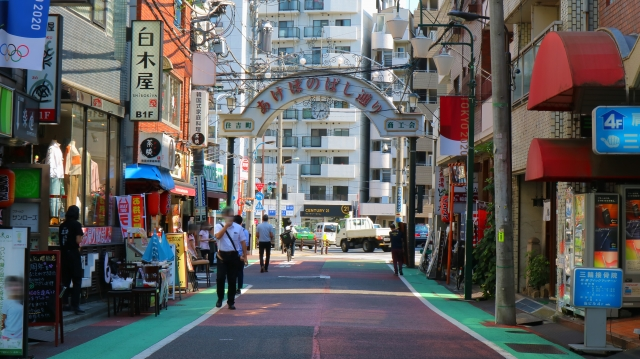
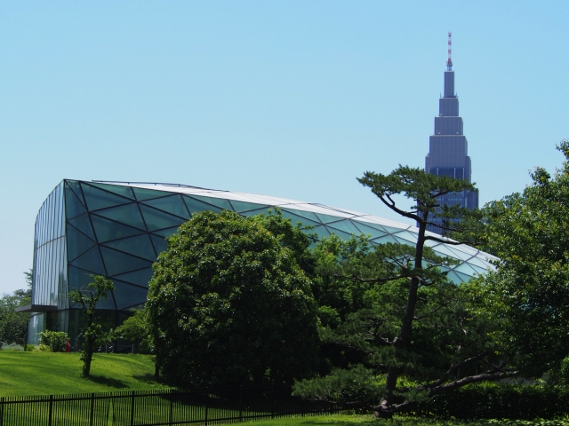
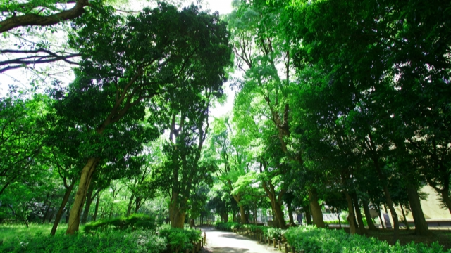

LOCATION
周辺環境

曙橋駅（徒歩4分）
都心の利便性と落ち着いた住環境での暮らしが叶うロケーション。
現地は新宿まで電車で2駅、自転車でも行ける距離にあり、利便性に富んだ立地です。
一方で都市主要エリアからはほどよく離れており、また現地周辺には防衛省、大学病院などもあるため、治安は良く、都心にありながら落ち着いた暮らしが実現できます。
現地敷地内には食料品や日用雑貨を扱う「スーパー三徳」やスポーツジム、医療機関、公園、保育施設などがあり、生活に必要な施設が身近に揃います。子育てもしやすくゆとりある暮らしが叶います。
シングルの方から子育てファミリーまで、どの世代の方にも快適なロケーションです。
-

スーパーマーケット三徳河田店（敷地内）
-

公園（敷地内）
-

エニタイムフィットネス 新宿河田町店（敷地内）
-
コンフォガーデンクリニック（敷地内）
※写真はイメージです。 -
フロンティアキッズ曙橋分園（敷地内）
※写真はイメージです。 -

あけぼのばし商店街（徒歩3～5分）
-

新宿御苑（徒歩20分）
-

戸山公園（徒歩31分）
LIFE INFORMATION
-
-
ショッピング施設
- 三徳 河田店
- 2~4分
- あけぼのばし通り商店街
- 3~5分
- まいばすけっと 曙橋駅前
- 3~5分
- 三徳 住吉店
- 4~6分
- ライフ市谷薬王寺店
- 7~9分
- ダイエー四谷荒木町店
- 6~8分
- ライフ 若松河田駅前店
- 8~10分
- ココカラファイン 曙橋店
- 2~4分
-
教育施設
- フロンティアキッズ曙橋分園
- 1~4分
- フロンティアキッズ曙橋本園
- 2~4分
- アスク薬王寺保育園
- 5~7分
- 牛込保育園ラパン
- 7~9分
- 原町みゆき保育園
- 9~11分
- 至誠会保育園
- 9~11分
- 新宿区立牛込仲之幼稚園
- 3~5分
- 牛込成城幼稚園
- 4~7分
- 新宿区立牛込仲之小学校
- 3~5分
- 新宿区立牛込第一中学校
- 17~19分
-
-
-
医療機関
- コンフォガーデンクリニック
- 1~3分
- コンフォガーデン歯科クリニック
- 1~3分
- 曙橋よつばファミリークリニック
- 4~6分
- 曙ホームクリニック
- 3~5分
- おうえケアとわクリニック
- 3~5分
- 新宿OP廣瀬クリニック
- 4~6分
- 東京女子医科大学病院
- 5~7分
-
その他
- 新宿区立住吉公園
- 4~6分
- 新宿御苑
- 19~21分
- 戸山公園
- 30~32分
- 河田町交番
- 9~11分
- 若松町特別出張所
- 10~12分
- 区立戸山図書館
- 17~19分
-